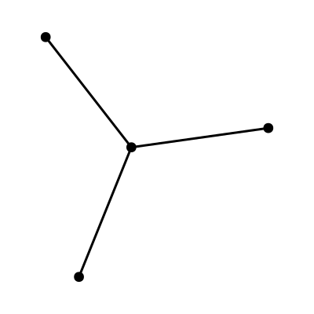

Graph States
graphstate returns a lot of information about encoding a given stabilizer state in a graph. A different API is being designed that streamlines the work with graph states.
Conversion to and from graph states is possible.
Consider a GHZ state:
ghz(4)+ XXXX
+ ZZ__
+ _ZZ_
+ __ZZIt can be converted to a graph state with graphstate
graphstate(ghz(4))[1]
Notice that the initial GHZ state was not in the typical graph state form. We can see that explicitly by converting back and forth between the two forms:
julia> using Graphs, QuantumCliffordjulia> ghz(4)+ XXXX+ ZZ__+ _ZZ_+ __ZZjulia> Stabilizer(Graph(ghz(4)))+ XZZZ+ ZX__+ Z_X_+ Z__XThere is a set of single-qubit operations that can convert any stabilizer tableau into a state representable as a graph. These transformations are performed implicitly by the Graph constructor when converting from a Stabilizer. If you need the explicit transformation you can use the graphstate function that specifies which qubits require a Hadamard, Inverse Phase, or Phase Flip gate. The graph_gatesequence or graph_gate helper functions can be used to generate the exact operations:
julia> s = ghz(4)+ XXXX+ ZZ__+ _ZZ_+ __ZZjulia> g, h_idx, ip_idx, z_idx = graphstate(s);julia> gate = graph_gate(h_idx, ip_idx, z_idx, nqubits(s))X₁ ⟼ + X___X₂ ⟼ + _Z__X₃ ⟼ + __Z_X₄ ⟼ + ___ZZ₁ ⟼ + Z___Z₂ ⟼ + _X__Z₃ ⟼ + __X_Z₄ ⟼ + ___Xjulia> canonicalize!(apply!(s,gate)) == canonicalize!(Stabilizer(g))trueThese converters also provides for a convenient way to create graph and cluster states, by using the helper constructors provided in Graphs.jl.
julia> Stabilizer(grid([4,1])) # Linear cluster state+ XZ__+ ZXZ_+ _ZXZ+ __ZXjulia> Stabilizer(grid([2,2])) # Small 2D cluster state+ XZZ_+ ZX_Z+ Z_XZ+ _ZZXGraphs are represented with the Graphs.jl package and plotting can be done both in Plots.jl and Makie.jl (with GraphMakie).